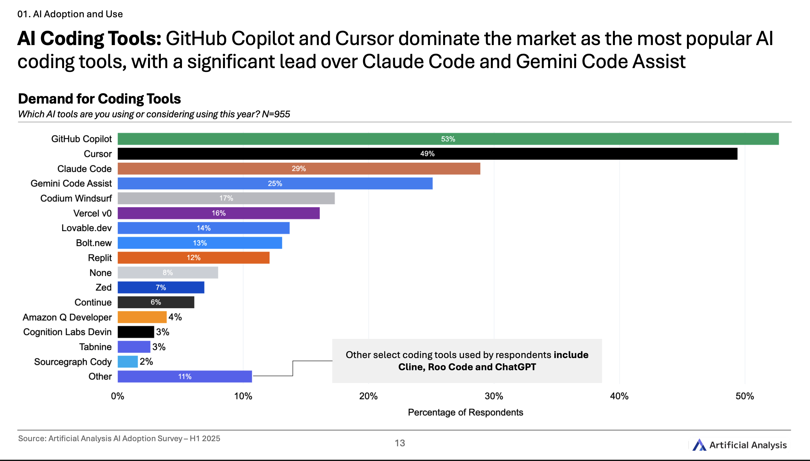

class: center, middle # Vibe Coding for Problem Solvers ## Translating intent to LLMs **By Lucas Soares** 08/05/2025 --- # About Me <div style="display: flex; align-items: center; justify-content: center; gap: 40px; margin: 40px 0;"> <div> <img src="../assets/profile_pic.png" width="250px" style="border-radius: 10px;"> </div> <div style="max-width: 400px;"> <h3>AI Engineer & Instructor</h3> <p style="font-size: 18px; margin: 15px 0;">Passionate about AI-augmented development</p> <p style="font-size: 18px; margin: 15px 0;">Building tools and teaching workflows</p> <p style="font-size: 18px; margin: 15px 0;">Focus on practical AI integration</p> </div> </div> --- # What You'll Learn <div style="display: grid; grid-template-columns: 1fr 1fr; gap: 30px; margin: 40px 0;"> <div style="background-color: #f0f8ff; padding: 25px; border-radius: 15px;"> <h3>🎯 Core Concepts</h3> <p>Define vibe coding and understand when to use it</p> </div> <div style="background-color: #f0fff0; padding: 25px; border-radius: 15px;"> <h3>🧠 Vibe Coding Core Skills</h3> <p>Practice translating ideas into AI instructions</p> </div> </div> <div style="display: grid; grid-template-columns: 1fr 1fr; gap: 30px;"> <div style="background-color: #fff8f0; padding: 25px; border-radius: 15px;"> <h3>🛠️ Tools & Patterns</h3> <p>Learn effective workflows and techniques</p> </div> <div style="background-color: #f8f0ff; padding: 25px; border-radius: 15px;"> <h3>🚀 Real Practice</h3> <p>Hands-on exercises and case studies</p> </div> </div> --- class: center, middle # What is Vibe Coding? --- <div style="display: flex; justify-content: center;"> <img src="../assets/andrej-tweet-vb-cd.png" width="600px"> </div> --- # ⚠️ CRITICAL DISTINCTION <div style="display: flex; justify-content: center; margin: 40px 0;"> <div style="border: 3px solid #e74c3c; padding: 25px; border-radius: 15px; background-color: #fee; max-width: 700px;"> <h2 style="color: #e74c3c; text-align: center;">Vibe Coding ≠ AI-Assisted Programming</h2> <p style="font-size: 18px; text-align: center;"><strong>Simon Willison (March 2025):</strong></p> <p style="font-size: 16px; font-style: italic;">"I'm concerned that people are applying the term 'vibe coding' to ALL forms of code written with AI assistance. This dilutes the term and gives a false impression of responsible AI-assisted programming."</p> </div> </div> --- # Vibe Coding x AI-Assisted Programming <div style="display: grid; grid-template-columns: 1fr auto 1fr; gap: 30px; align-items: center; margin: 40px 0;"> <div style="border: 2px solid #e74c3c; padding: 25px; border-radius: 15px; background-color: #fee; text-align: center;"> <h3>🧪 Vibe Coding</h3> <p style="font-size: 18px;"><strong>"Building software with an LLM without reviewing the code it writes"</strong></p> <p><em>- Simon Willison, 2025</em></p> </div> <div style="font-size: 48px; color: #666;">≠</div> <div style="border: 2px solid #27ae60; padding: 25px; border-radius: 15px; background-color: #e8f5e8; text-align: center;"> <h3>🤖 AI-Assisted Programming</h3> <p style="font-size: 18px;"><strong>Review, understand, and take accountability</strong></p> <p><em>Using AI as a typing assistant</em></p> </div> </div> --- # When Vibe Coding is Appropriate <div style="display: flex; justify-content: center; gap: 40px; margin: 40px 0;"> <!-- Safe Vibe Coding Zone --> <div style="background-color: #f8f9fa; padding: 25px; border-radius: 15px; max-width: 400px; flex: 1;"> <h3 style="text-align: center;">✅ Safe Vibe Coding Zone</h3> <div style="margin-top: 20px;"> <p>✓ <strong>Throwaway weekend projects</strong></p> <p>✓ <strong>Low-stakes experiments</strong></p> <p>✓ <strong>Learning and building intuition</strong></p> <p>✓ <strong>One-off data processing scripts</strong></p> <p>✓ <strong>Personal prototypes</strong></p> </div> </div> <!-- NOT for Production --> <div style="background-color: #fee; padding: 25px; border-radius: 15px; max-width: 400px; border: 2px solid #e74c3c; flex: 1;"> <h3 style="text-align: center; color: #e74c3c;">❌ NOT for Production</h3> <div style="margin-top: 20px;"> <p>✗ Complex, long-term systems</p> <p>✗ Security-critical applications</p> <p>✗ Code that others must maintain</p> <p>✗ High-stakes business logic</p> </div> </div> </div> --- class: center, middle # 💡 The Middle Ground --- class: center, middle <h1> <span style="background-color: lightgreen"> Whiteboard - The Spectrum of AI-Augmented Development - Useful Definitions & Tools </span> </h1> --- # Trade-offs and Characteristics <div style="display: flex; justify-content: center; align-items: flex-start; gap: 40px; min-height: 340px;"> <!-- Vibe Coding --> <div style="flex: 0 0 250px; text-align: center;"> <h3 style="margin-bottom: 16px;">Vibe Coding</h3> <ul style="color: #e74c3c; text-align: left; display: inline-block; margin: 0 auto;"> <li>↓ Less systematicity</li> <li>↓ Less precision</li> <li>↓ Less review</li> <li>↓ Less understanding</li> <li>↓ Less control</li> <li>↑ <strong>Maximum speed</strong></li> </ul> </div> <!-- AI-Assisted Programming --> <div style="flex: 0 0 300px; text-align: center;"> <h3 style="margin-bottom: 16px;">AI-Assisted Programming</h3> <ul style="color: #f39c12; text-align: left; display: inline-block; margin: 0 auto;"> <li>○ Balanced systematicity</li> <li>○ Balanced precision</li> <li>○ Strategic review</li> <li>○ Guided understanding</li> <li>○ Shared control</li> <li>○ <strong>True augmentation</strong></li> </ul> </div> <!-- Software Engineering --> <div style="flex: 0 0 350px; text-align: center;"> <h3 style="margin-bottom: 16px;">Software Engineering</h3> <ul style="color: #27ae60; text-align: left; display: inline-block; margin: 0 auto;"> <li>↑ More systematicity</li> <li>↑ More precision</li> <li>↑ More review</li> <li>↑ More understanding</li> <li>↑ More control</li> <li>↓ <strong>Slower process</strong></li> </ul> </div> </div> --- class: center, middle # The Vibe Coding Ecosystem --- class: center, middle <div style="display: flex; justify-content: center;">  </div> --- ### Tool Categories by Use Case <div style="display: grid; grid-template-columns: 1fr 1fr; gap: 30px;"> <div> <h4>🎨 Web Builders</h4> <div style="background-color: #f8f9fa; padding: 15px; border-radius: 8px;"> <p><strong>Claude (artifacts)</strong> - $20/month<br> <p><strong>ChatGPT (canvas)</strong> - $20/month<br> <p><strong>Gemini (canvas)</strong> - $20/month<br> Safe sandbox prototyping</p> <p><strong>Vercel v0</strong> - $20/month<br> <p><strong>Lovable</strong> - $25/month<br> React + production deployment</p> </div> </div> <div> <h4>💻 IDE Integration</h4> <div style="background-color: #f8f9fa; padding: 15px; border-radius: 8px;"> <p><strong>Cursor</strong> - $20/month<br> Full codebase understanding</p> <p><strong>GitHub Copilot</strong> - $10/month<br> Code completion workflows</p> <p><strong>Codium Windsurf</strong> - $50 - $250/month<br> </div> </div> </div> --- # Tool Landscape (Continued) <div style="display: grid; grid-template-columns: 1fr 1fr; gap: 30px;"> <div> <h4>⚡ Terminal Agents</h4> <div style="background-color: #f8f9fa; padding: 15px; border-radius: 8px;"> <p><strong>Claude Code</strong> - Max Plan: $17 - $200/month<br> Mobile coding, file access</p> <p><strong>Aider</strong> - API costs only<br> Git integration, autonomous</p> </div> </div> <div> <h4>☁️ Cloud Environments</h4> <div style="background-color: #f8f9fa; padding: 15px; border-radius: 8px;"> <p><strong>Replit</strong> - $7-25/month<br> Full dev environment</p> <p><strong>CodeSandbox</strong> - Free-$20/month<br> Instant web development</p> </div> </div> </div> <!-- Visual: Tool comparison matrix showing features vs price --> --- class: center, middle # 7 Skills → 12 Concrete Patterns --- # Vibe Coding Skills <div style="display: grid; grid-template-columns: 1fr 1fr; gap: 30px;"> <div style="border: 2px solid #27ae60; padding: 20px; border-radius: 15px; background-color: #e8f5e8;"> <h3>✅ Basic</h3> <div style="margin-top: 15px;"> <p><strong>1. Prompting</strong></p> <p><strong>2. Context Management</strong></p> <p><strong>3. Capability Assigment</strong></p> <p><strong>4. Vibe Checking</strong></p> </div> </div> <div style="border: 2px solid #3498db; padding: 20px; border-radius: 15px; background-color: #f0f8ff;"> <h3>🆕 Advanced</h3> <div style="margin-top: 15px;"> <p><strong>5. Strategic Cognitive Offloading</strong></p> <p><strong>6. Personal Benchmarking</strong></p> <p><strong>7. Agentic Task Orchestration</strong></p> </div> </div> </div> --- class: center, middle <h1> <span style="background-color: lightgreen"> Demo: Exemplifying the 7 Skills </span> </h1> --- # Skills 1-4: The Foundation <div style="display: grid; grid-template-columns: 1fr 1fr; gap: 15px; font-size: 16px;"> <div style="background-color: #e8f4fd; padding: 15px; border-radius: 8px;"> <h4>1️⃣ Prompting</h4> <p> <span style="color: red;">Bad:</span> "How do I market my app?"<br> <span style="color: green;">Good:</span> "List 3 user personas for my app and suggest a marketing channel for each." </p> </div> <div style="background-color: #fff3cd; padding: 15px; border-radius: 8px;"> <h4>2️⃣ Context Management</h4> <p>30-page report + [prompt for dashboard app] + [language docs] → dashboard app</p> </div> <div style="background-color: #d4edda; padding: 15px; border-radius: 8px;"> <h4>3️⃣ Capability Assignment</h4> <p>"Let the LLM write the code, but I’ll review and test it myself."</p> </div> <div style="background-color: #f8d7da; padding: 15px; border-radius: 8px;"> <h4>4️⃣ Vibe Checking</h4> <p>"Does this answer feel right? If not, ask for clarification or a different approach."</p> </div> </div> --- # Skills 5-7: Advanced Techniques <div style="background-color: #e7e7ff; padding: 15px; border-radius: 8px; margin-top: 15px;"> <h4>5️⃣ Strategic Cognitive Offloading</h4> <p>"Summarize these meeting notes while I focus on the next task."</p> </div> <div style="background-color: #f0fff4; padding: 15px; border-radius: 8px; margin-top: 15px;"> <h4>6️⃣ Personal Benchmarking</h4> <p>"How does my solution compare to best practices or previous attempts?"</p> </div> <div style="background-color: #fff8e1; padding: 15px; border-radius: 8px; margin-top: 15px;"> <h4>7️⃣ Agentic Task Orchestration</h4> <p>"Break this project into subtasks and assign each to the right AI tool or agent."</p> </div> --- class: center, middle # Deep Dive into the 7 Vibe Coding Skills --- <!-- Sub skills of prompting: 1. Clear, direct 2. Decomposition 3. Examples 4. Role 5. Time to think 6. Output constraints sources to use: https://www.anthropic.com/ai-fluency/deep-dive-2-effective-prompting-techniques --> <span style="color: red">prompting skills</span> --- <!-- Sub skills for context management + tooling - use this source for inspiration but not going away from our presentation scope: https://blog.langchain.com/context-engineering-for-agents/ - Context builder tools --> <span style="color: red">context skill</span> --- <!-- Sub skills for capability assignment - sources to also use: https://www.anthropic.com/ai-fluency/ai-fluency-delegation - Models (knowledge cut offs etc..) - Tooling (which tools to use for the job) ### General LLM Usage Tips from Andrej Karpathy #### Model Selection and Usage > "Start new chats when switching topics to maintain context efficiency... Be aware of which model you're using and choose the appropriate tier for your needs" > — [Andrej Karpathy tips on using LLMs.md] #### When to Use Different Tools https://simonwillison.net/2025/Mar/11/using-llms-for-code/#a-detailed-example:~:text=Use%20tools%20that%20can%20run%20the%20code%20for%20you%20%23,whether%20they%20can%20safely%20run%20and%20iterate%20on%20my%20code - **Thinking Models**: "Try thinking models for difficult math and coding problems" - **Search Tools**: "Use internet search for recent information" - **Deep Research**: "Try deep research for comprehensive understanding" - **Document Upload**: "Upload documents to provide context" --> <span style="color: red">capability assignment skill</span> --- <!-- go online and learn about what vibe checking LLMs in the context of vibe coding means then add it to the presentation with the proper structure and sources --> <span style="color: red">vibe checking skill</span> --- <!-- go online and learn about what strategic cognitive offloading LLMs in the context of vibe coding means then add it to the presentation with the proper structure and sources --> <span style="color: red">strategic cognitive offloading skill</span> --- <!-- go online and learn about what personal benchmarking LLMs in the context of vibe coding means then add it to the presentation with the proper structure and sources --> <span style="color: red">personal benchmarking skill</span> --- <!-- go online and learn about what agentic task orchestration looking into specifically for agentic coding tools like claude-code LLMs in the context of vibe coding means then add it to the presentation with the proper structure and sources --> <span style="color: red">agentic task orchestration skill</span> --- # Safety First: The Sandbox Principle <div style="display: flex; justify-content: center; margin: 40px 0;"> <div style="border: 2px solid #3498db; padding: 25px; border-radius: 15px; background-color: #f0f8ff; max-width: 600px;"> <h3>🔒 What's a Sandbox?</h3> <p style="font-size: 18px;">Safe execution of untrusted code in isolated environments</p> <p style="margin-top: 15px;"><strong>Examples:</strong> Claude Artifacts, ChatGPT Canvas/Code Interpreter</p> </div> </div> <p style="text-align: center; font-size: 14px; margin-top: 20px;"> <a href='https://en.wikipedia.org/wiki/Sandbox_(computer_security)'>Learn more about sandboxes →</a> </p> --- # The Core Insight: Intent Translation <div style="display: flex; justify-content: center; margin: 40px 0;"> <div style="border: 2px solid #9b59b6; padding: 25px; border-radius: 15px; background-color: #f8f5ff; max-width: 600px; text-align: center;"> <h3>🧠 Mental Model Shift</h3> <p style="font-size: 18px;">Vibe coding = <strong>translating human intent</strong></p> <p>Into AI-executable instructions</p> </div> </div> -- <div style="text-align: center; margin: 40px 0;"> <div style="display: grid; grid-template-columns: 1fr auto 1fr auto 1fr; gap: 20px; align-items: center; max-width: 800px; margin: 0 auto;"> <div style="padding: 20px; border: 2px solid #e74c3c; border-radius: 10px; background-color: #fee;"> <h4>Vague Intent</h4> <p>"Can you help me with my code?"</p> </div> <span style="font-size: 36px; color: #666;">→</span> <div style="padding: 14px; border: 2px solid #f39c12; border-radius: 10px; background-color: #fff8e1;"> <h4>Refined Request</h4> <p>"Write a function that reverses a string."</p> </div> <span style="font-size: 36px; color: #666;">→</span> <div style="padding: 8px; border: 2px solid #27ae60; border-radius: 10px; background-color: #e8f5e8;"> <h4>Actionable Output</h4> <p> <code> def reverse_string(s):<br> return s[::-1] </code> </p> </div> </div> </div> <div style="display: flex; justify-content: center; margin: 40px 0;"> <div style="background-color: #f8f9fa; padding: 25px; border-radius: 15px; max-width: 700px;"> <h3 style="text-align: center;">🎯 Core Realization</h3> <p style="font-size: 18px; text-align: center;">This isn't just about coding—it's about <strong>responsible AI augmentation</strong> across all problem-solving domains</p> </div> </div> --- class: center, middle # Case Study --- class: center, middle <div style="border: 2px solid #27ae60; padding: 20px; border-radius: 10px; background-color: #f0fff4;"> <h3>🎯 Building a Simple HTML/JS App Entirely on Mobile</h3> <p> Simon scraped a conference website and built a mobile-friendly schedule app working entirely on his iPhone. </p> </div> <p style="font-size: 14px; margin-top: 200px; margin-left: 0px"> <a href='https://simonwillison.net/2025/Jul/17/vibe-scraping/'>Vibe scraping and vibe coding a schedule app for Open Sauce 2025 entirely on my phone</a> </p> --- class: center, middle <div style="display: flex; justify-content: center; margin: 40px 0;"> <div style="border: 2px solid #3498db; padding: 25px; border-radius: 15px; background-color: #f0f8ff; max-width: 700px;"> <h3>📱 Open Sauce 2025 Schedule App</h3> <p><strong>Constraint:</strong> Working entirely on iPhone</p> <p><strong>Tools Used:</strong> OpenAI Codex + Claude Artifacts</p> <hr style="margin: 15px 0;"> <p><strong>Process:</strong></p> <p>• Codex: Autonomous scraping (13 minutes runtime)</p> <p>• Claude: Mobile-friendly UI generation</p> <p>• GitHub: Mobile deployment</p> <p><strong>Outcome:</strong> Full app deployed in under 3 hours</p> </div> </div> <p style="font-size: 14px; margin-top: 10px; margin-left: 0px"> <a href='https://simonwillison.net/2025/Jul/17/vibe-scraping/'>Vibe scraping and vibe coding a schedule app for Open Sauce 2025 entirely on my phone</a> </p> --- class: center, middle # ⚠️ Critical Lesson: When Vibe Coding Fails <div style="display: flex; justify-content: center; margin: 40px 0;"> <div style="border: 2px solid #e74c3c; padding: 25px; border-radius: 15px; background-color: #fee; max-width: 700px;"> <h3>🚨 The 130MB Bug</h3> <p><strong>Problem:</strong> Schedule app made 176 requests, downloaded 130MB</p> <p><strong>Cause:</strong> Unoptimized speaker avatar images</p> <p><strong>Simon's Response:</strong> "Vibe check" caught the issue</p> <hr style="margin: 15px 0;"> <p><strong>Lesson:</strong> Even low-stakes projects need verification</p> <p><strong>Fix:</strong> One Codex prompt reduced to 93.58 KB (1,400x smaller!)</p> </div> </div> <p style="font-size: 14px; margin-top: 10px; margin-left: 0px"> <a href='https://simonwillison.net/2025/Jul/17/vibe-scraping/'>Vibe scraping and vibe coding a schedule app for Open Sauce 2025 entirely on my phone</a> </p> --- class: center, middle <h1> <span style="background-color: lightgreen"> Demo - Let's Vibe Code a Useful HTML/JS App </span> </h1> --- class: center, middle # 12 Patterns for Vibing with LLMs --- class: center, middle <div style="display: grid; grid-template-columns: 1fr 1fr; gap: 25px;"> <div style="background-color: #f0f8ff; padding: 20px; border-radius: 10px;"> <h3>🎯 Start with Prototypes</h3> <p>Fuzzy Instruction - Prototype - Refine</p> </div> <div style="background-color: #f0fff0; padding: 20px; border-radius: 10px;"> <h3>🧪 Vibe checking checklist</h3> <p>LLM Output - Check - custom checklist (works? valid?...)</p> </div> </div> <div style="display: grid; grid-template-columns: 1fr 1fr; gap: 25px; margin-top: 20px;"> <div style="background-color: #fff8f0; padding: 20px; border-radius: 10px;"> <h3>📝 Provide Clear Specs</h3> <p>Prompt for Spec Doc - Reasoning LLM Feedback - Refined Spec Doc</p> </div> <div style="background-color: #fdf0f0; padding: 20px; border-radius: 10px;"> <h3>🔄 Restart When Stuck</h3> <p>Stuck or low quality output? - clear context - transfer only relevant context - prompt again</p> </div> </div> --- <div style="display: grid; grid-template-columns: 1fr 1fr; gap: 25px;"> <div style="background-color: #f8f4ff; padding: 10px; border-radius: 10px;"> <h3>🖥️ Let It See What You See</h3> <p>error - Paste code + error - ask LLM to debug</p> <p>Screenshot - ask LLM for feature - refine</p> </div> <div style="background-color: #f0f8f0; padding: 10px; border-radius: 10px;"> <h3>🔁 Automate Repeatable Steps</h3> <p>prompt for automation - llm output - refine as single python script with uv metadata - copy & paste in terminal</p> </div> </div> <div style="display: grid; grid-template-columns: 1fr 1fr; gap: 25px; margin-top: 20px;"> <div style="background-color: #fff8f0; padding: 10px; border-radius: 10px;"> <h3>📈 Build Personal Benchmark</h3> <p>LLM produces wrong output - save example + prompt in table - re-test later with new</p> </div> <div style="background-color: #fdf0f0; padding: 10px; border-radius: 10px;"> <h3>🔗 Store Formatting Prompts</h3> <p> prompt to transform X to Y - store - re-use with shortcut</p> </div> </div> --- <div style="display: grid; grid-template-columns: 1fr 1fr; gap: 25px;"> <div style="background-color: #e8f4fd; padding: 10px; border-radius: 10px;"> <h3>📊 Generate Synthetic Data</h3> complex data analysis - llm outputs sample data - test with sample data - refine - implement in real data <ul> </ul> </div> <div style="background-color: #fff3cd; padding: 10px; border-radius: 10px;"> <h3>🗣️ Voice Workflows</h3> <ul> <li>Use voice workflows to communicate initial long instructions</li> </ul> </div> </div> <div style="display: grid; grid-template-columns: 1fr 1fr; gap: 25px; margin-top: 20px;"> <div style="background-color: #f0fff4; padding: 10px; border-radius: 10px;"> <h3>🛠️ Context-Based Coding</h3> <ul> <li>Write code using the context from official up to date docs</li> </ul> </div> <div style="background-color: #f8f4ff; padding: 10px; border-radius: 10px;"> <h3>🗣️ Raw to Structured</h3> <p> Raw input (e.g tasks for the week) - LLM - structured events for calendar </p> <ul> </ul> </div> </div> --- class: center, middle <h1> <span style="background-color: lightgreen"> Demo: Exemplifying Patterns for Vibe Coding </span> </h1> --- # Prompting Modes <div style="display: flex; justify-content: space-around; margin: 40px 0;"> <div style="background-color: #e8f4fd; padding: 25px; border-radius: 10px; flex: 1; margin-right: 20px;"> <h3>🔍 Exploration Mode</h3> <p style="font-size: 18px;">"What are the ways to do X?"</p> <p><em>For research and options to get to a spec doc.</em></p> </div> <div style="background-color: #fff3cd; padding: 25px; border-radius: 10px; flex: 1;"> <h3>👑 Execution Mode</h3> <p style="font-size: 18px;">"Write this function, add tests, refactor"</p> <p><em>To prototype a solution.</em></p> </div> </div> --- # 🎯 Real World Examples - Execution Mode <div style="display: flex; justify-content: center; margin: 40px 0;"> <div style="background-color: #f8f9fa; padding: 25px; border-radius: 15px; max-width: 700px;"> <div style="margin-top: 20px;"> <p><strong>For Codex (One-shot tasks):</strong></p> <p style="font-style: italic; background-color: #e8f4fd; padding: 10px; border-radius: 5px;">"Install playwright and use it to visit https://opensauce.com/agenda/ and grab the full details of all three day schedules from the tabs - Friday and Saturday and Sunday - then save data in as much detail as possible in a JSON file and submit that as a PR"</p> <p style="margin-top: 15px;"><strong>For Claude (Iterative building):</strong></p> <p style="font-style: italic; background-color: #fff3cd; padding: 10px; border-radius: 5px;">"Build an artifact with no react that turns the schedule into a nice mobile friendly webpage - there are three days Friday, Saturday and Sunday. Don't copy the raw JSON over - fetch from this URL instead. Also include a button to download ICS at the top."</p> </div> </div> </div> <p style="font-size: 14px; margin-top: 10px; margin-left: 0px"> <a href='https://simonwillison.net/2025/Jul/17/vibe-scraping/#:~:text=I%20started%20a,as%20a%20PR'>Vibe scraping and vibe coding a schedule app for Open Sauce 2025 entirely on my phone</a> </p> ### Why This Matters Now: - **Every day** someone becomes a programmer through ChatGPT - **Productivity gaps** are widening between AI-assisted and traditional developers - **Career differentiation** increasingly depends on AI augmentation skills - **3+ years** of early adopter advantage is ending --- class: center, middle <div style="display: grid; grid-template-columns: 1fr 1fr; gap: 30px; margin: 40px 0;"> <div style="background-color: #fee; padding: 25px; border-radius: 15px; border: 2px solid #e74c3c;"> <h3>🐌 Traditional Approach</h3> <p>• Manual research and documentation reading</p> <p>• Writing every line from scratch</p> <p>• Linear problem-solving processes</p> <p>• Limited to personal knowledge</p> </div> <div style="background-color: #e8f5e8; padding: 25px; border-radius: 15px; border: 2px solid #27ae60;"> <h3>🚀 AI-Augmented Approach</h3> <p>• Instant exploration of options</p> <p>• Rapid prototyping and iteration</p> <p>• Parallel processing of multiple solutions</p> <p>• Access to vast knowledge synthesis</p> </div> </div> --- class: center, middle <h1> <span style="background-color: lightgreen"> Demo - Building Personal Workflows </span> </h1> --- # Practice Plan <div style="display: grid; grid-template-columns: 1fr 1fr; gap: 30px; margin: 40px 0;"> <div style="background-color: #e8f4fd; padding: 25px; border-radius: 15px;"> <h3>📅 Daily AI Habits</h3> <div style="margin-top: 20px;"> <p>✓ Use AI for every coding task</p> <p>✓ Practice extremely specific prompts</p> <p>✓ Know your model's training cut-off</p> <p>✓ Test/Vibe check immediately, always</p> </div> </div> <div style="background-color: #fff3cd; padding: 25px; border-radius: 15px;"> <h3>📅 Weekly Skill Building</h3> <div style="margin-top: 20px;"> <p>✓ Try one pure vibe coding experiment</p> <p>✓ Practice vibe checking workflows</p> <p>✓ Explore new AI tools/models</p> <p>✓ Document what works for you</p> </div> </div> </div> --- # Critical Success Metrics (Updated): -- - **Speed**: Can you ship projects you wouldn't have started before? -- - **Confidence**: Do you trust your vibe checks? -- - **Discernment**: Can you distinguish appropriate vs inappropriate vibe coding scenarios? -- - **Accountability**: How much do you understand and own your code? -- ### Key Setup Principles: 1. **Start with safer tools** (Claude Artifacts, ChatGPT Code Interpreter) -- 2. **Learn model training cut-offs** (OpenAI: Oct 2023/May 2024) -- 3. **Practice constantly** -- 4. **Build your discernment** on how to use AI effectively --- # Beyond Individual Practice <div style="display: flex; justify-content: center; margin: 40px 0;"> <div style="border: 2px solid #9b59b6; padding: 10px; border-radius: 15px; background-color: #f8f5ff; max-width: 700px;"> <h3>🎯 Bonus Skill: Cross-Domain Translation</h3> <p style="font-size: 18px;">"Apply a concept from biology to team management"</p> <p><em>Use AI as an analogical engine for transductive thinking</em></p> </div> </div> -- <div style="text-align: center; margin: 40px 0;"> <div style="background-color: #f0f8ff; padding: 10px; border-radius: 15px; margin: 10px 0;"> <h3>The Meta-Skill - "Vibe coding for thought" </h3> <p>Swap "apps" for "ideas" and "prototypes" for "approximative answers"</p> </div> </div> --- # A Paradigm Shift <div style="display: grid; grid-template-columns: 1fr 1fr; gap: 20px;"> <div style="background-color: #f0f8ff; padding: 25px; border-radius: 15px; border: 2px solid #3498db;"> <h3>🎲 Strategic Vibe Coding</h3> <p>Know when to embrace the vibes for rapid experimentation and learning</p> </div> <div style="background-color: #e8f5e8; padding: 30px; border-radius: 15px; border: 2px solid #27ae60;"> <h3>✅ AI Augmentation</h3> <p>Review, understand, and take accountability for AI-generated solutions</p> </div> </div> -- <div style="display: flex; justify-content: center; margin: 10px 0;"> <div style="background-color: #f8f9fa; padding: 20px; border-radius: 15px; max-width: 700px; border: 2px solid #9b59b6;"> <p style="font-size: 20px; font-style: italic; text-align: center; margin-bottom: 20px;"> "We need to turn a solitary interaction with an AI into a shared journey with a community, and to move them towards learning the important lessons about engineering. We do not want to have a generation of developers held captive by companies building vibe-coding tools with little incentive for their users to break from those shackles." </p> <p style="font-size: 14px; text-align: right; margin-top: 10px;"> — <a href="https://lucumr.pocoo.org/2025/7/20/the-next-generation/" target="_blank" style="color: #9b59b6; text-decoration: underline;">Armin Ronacher, "Welcoming The Next Generation of Programmers"</a> </p> </div> </div> <!-- Visual: Two paths diverging - traditional coding leading to irrelevance, AI-augmented leading to opportunity --> --- # Connect With Me ## 📚 [Course materials](https://github.com/EnkrateiaLucca/vibe-coding-problem-solvers) ## 🔗 [LinkedIn](https://www.linkedin.com/in/lucas-soares-969044167/) ## 🐦 [Twitter/X - @LucasEnkrateia](https://x.com/LucasEnkrateia) ## 📺 [YouTube - @automatalearninglab](https://www.youtube.com/@automatalearninglab) ## 📧 Email: lucasenkrateia@gmail.com --- class: center, middle ## Keep Vibing, Keep Building